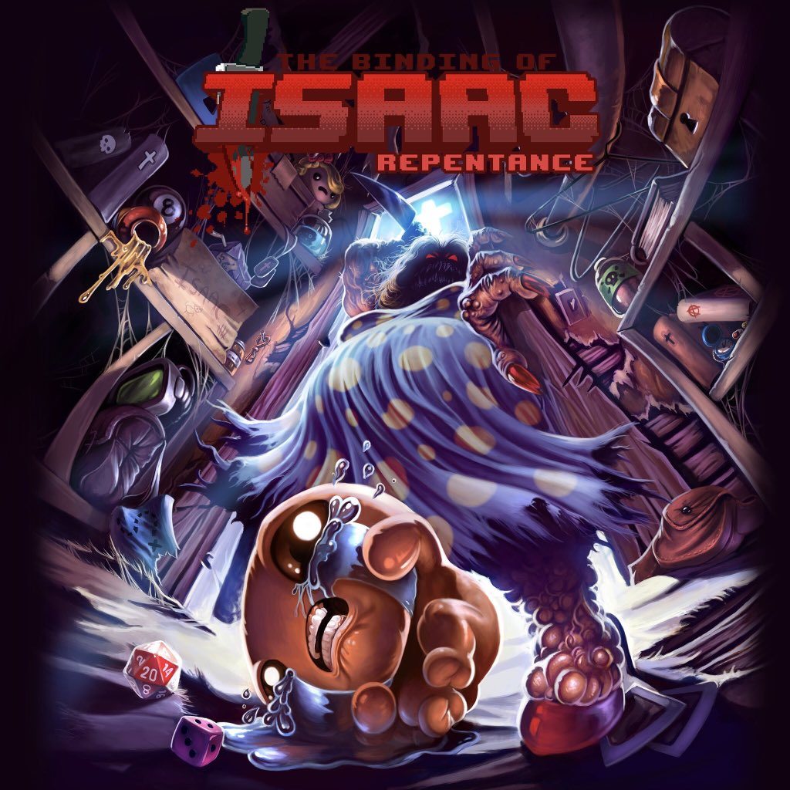
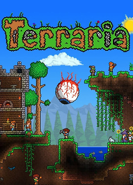

The Binding of Isaac
The Binding of Isaac Repentence Game Art via Edmund McMillen, the games creator on Twitter.
The Binding of Isaac is a rouge-like video game made by Edmund McMillen initially released in 2011. It is very fun and has pretty much infinite replayability. It's a game very much based on collecting items and seeing how they react when put together, or at least that's why I love it. It's very fun to over power the game and steam roll every enemy and boss. It has so much content it is ridiculous, I love this game dearly.
Terraria
Terraria's cover art found here, copyright Re:Logic
This game is such a delight, great music, engaging music and is a very satisfying collect-a-thon. This game has the type of grinding I like in video game. Grinding bosses until you can beat them without a thougth is one of the most satisfying things and the progression adds a similar experience.
Titanfall 2

Terraria's cover art, foundhere , copyright EA
One of my favorite multiplayer fps ever. I love movement and dense, skill based movement mechanics such as bunny hopping, grenade boosting etc. and this game is full of it.
Stardew Valley

Stardew Valley's cover art, found here.
{kind=link}
A beautiful serence expereince, such a relaxing game which just exemplifies the expereince of getting away from city life, and the hustle and bustle of it all. Made entirely by Eric Barone,a UW Tacoma CS graduate actually. A beautiful experience which is completely unstressful and so much fun